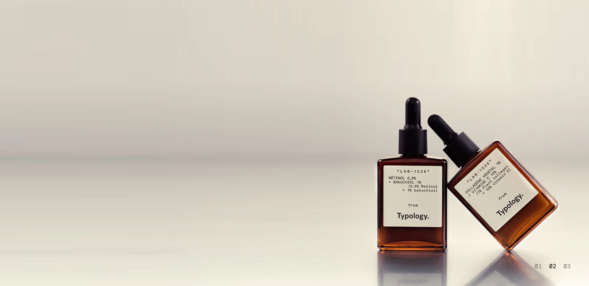
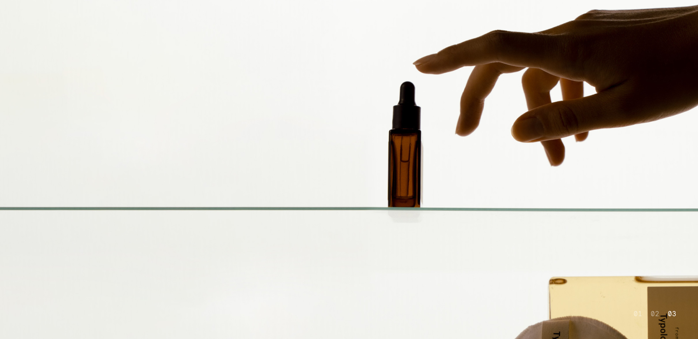
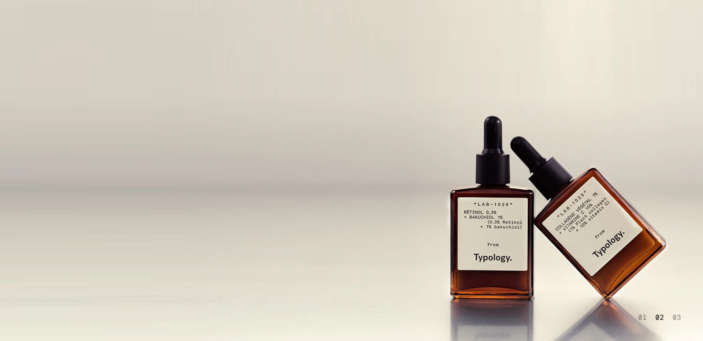
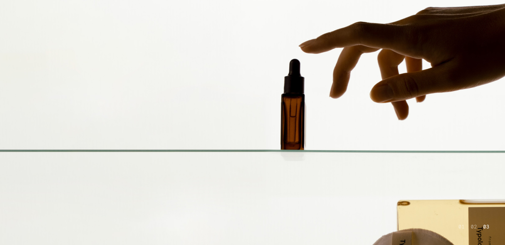

Preface
Preface
You may don't know what is Typology, but you have probably heard of these skincare companies such as The Ordinary and The Inkey List which are famous for their
minimal and clearn skincare ingredients on their products.
Typology is a French skincare brand known for its minimalist and effective approach to skincare with transparant ingredient list.
While we researching about the company and their brand mission, their website did not showcase their vision which is why me and my teammates create
a proposal for a new design website to help users that are not familiar with skincare ingredients to pick the most suitable product for their skin concern.
Alongside four classmates, I framed the problem that prompted the intervention and helped shape the content strategy, visuals, and interaction design.
Part One
Research and Framing
When it comes to business and brand development, Typology is known to prioritize transparancy as their number one priority to the users.
As we can see with their products the brand does only use necessary skincare ingredients that is needed for the skin without additional fragrance.
We decided to make Typology website to allow users to easily explore different products based on the ingredient they need for their skin concern.
Secondary Research
During initial research, my teammates and I did a secondary research on a study done by Harvard in 2019 that asked 520 beauty enthusiast “Where do you seek information about beauty products before you buy?”
From these observations, we can see that beauty product shoppers typically seek advice from social media influencers.
To dig deeper into this, we took a look at TikTok influencers and experts, because this platform has over 5.1 billion views on #acne and #acnetreatment, making one of the biggest platform for skin concerns.

We also looked at five different skincare expert and as a lot of users search for skincare from social media such as TikTok and learn about skincare ingredients.
Framing the problem statement
As a skincare enthusiast, I would like to shop skincare based on ingredients that works on my skin as the brand itself emphasize on ingreients however, we cannot really see on their website.
This project will create a new customer experience
for users with an ingredient in mind in order help them easily find products to treat their skin concern.
To create this experience for these types of users, we will give users the option to browse through products by ingredient, so they can compare and decide which product is
best for their needs. We also want to educate users in the process, with key information as well as additional information for users who choose to seek it.
By doing this, we can take into consideration a user base that was ignored previously.

Our proposed solution
As a skincare enthusiast, I would like to shop skincare based on ingredients that works on my skin as the brand itself emphasize on ingreients however, we cannot really see on their website.
This project will create a new customer experience
for users with an ingredient in mind in order help them easily find products to treat their skin concern.
Comparison
To make it simple for customers to obtain popular key ingredients, a shop by ingredient option has been introduced to the navigation drop-down menu.
Unfortunately, Typology's initial drop-down menu appeared to be too extensive, so we condensed it to display distinct sections instead, making it easier for users to browse and access.

We created new PLP by ingredients by adding target concern display for each product labeled on the PLP so user can easily discern each product
from another especially when ingredients have many different uses.
We also added recommending ingredients by concern as the PLP will recommend users similar ingredients to target their skin concern as to allow users to explore other options and perhaps discover new ingredients to help them out.
Design decisions
We compared two major competitors of Typology: The InkeyList and The Ordinary, to understand what we can do and adapt to improve the current user experience.
Inkey List provides users with an extensive ingredients index to educate them; however, this list is so complex that it makes it hard for the regular user to understand. We then looked
into The Ordinary and found that they give key information about each product in the PLP, but additional information was very inaccessible. These observations helped us come to the decision to highlight key information in the PLP, but still give users the choice to dive deeper.